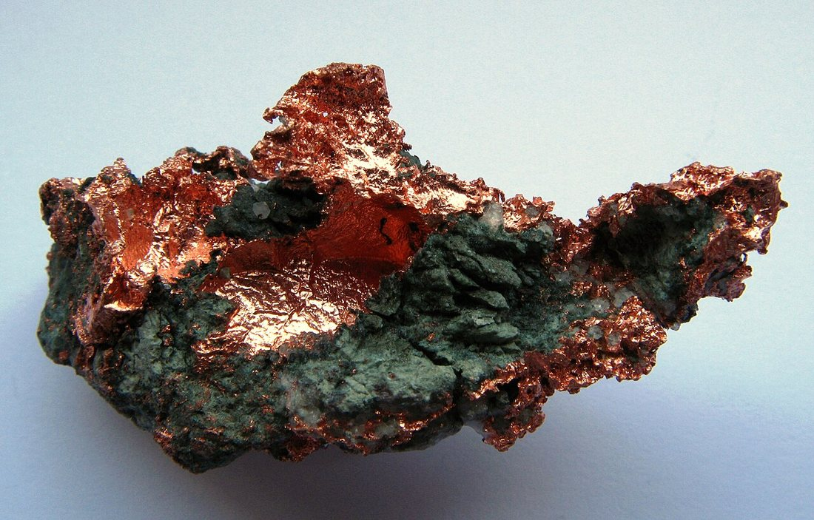
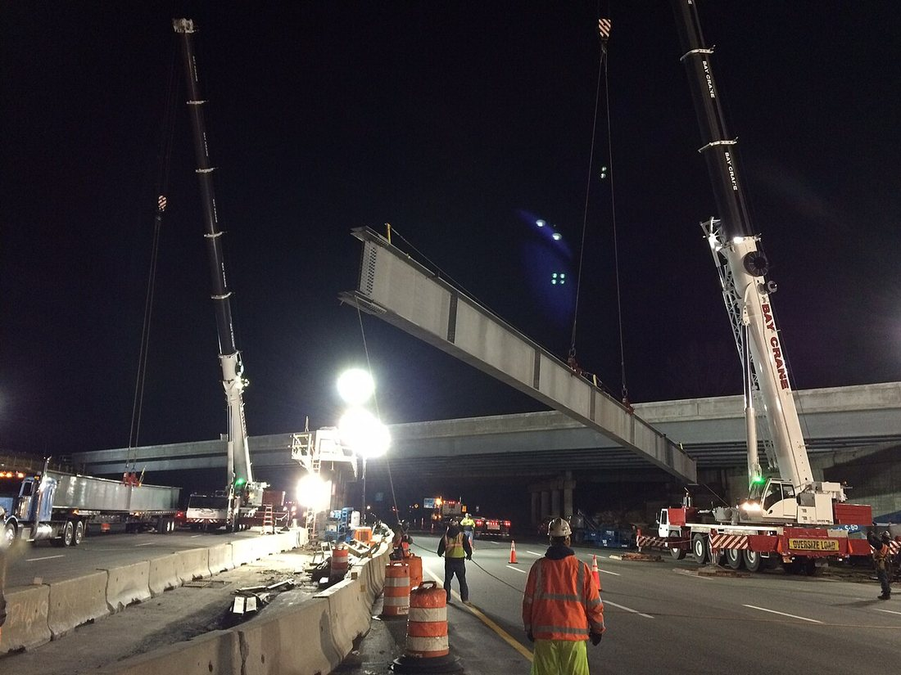
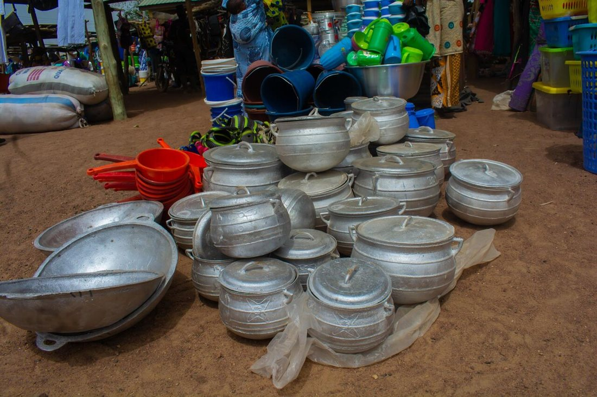
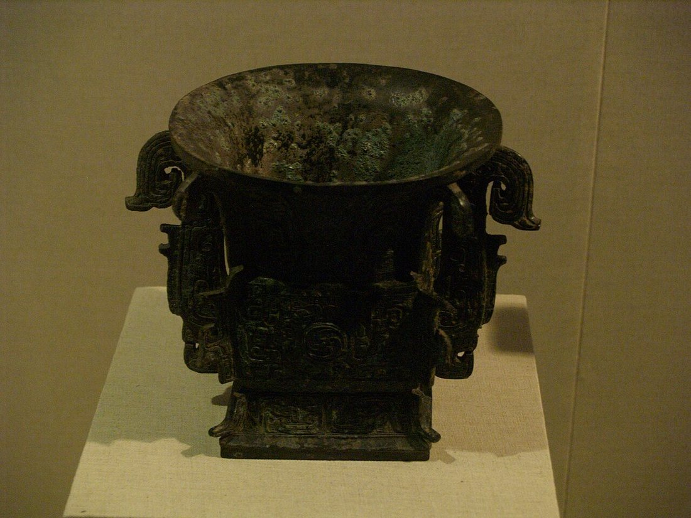
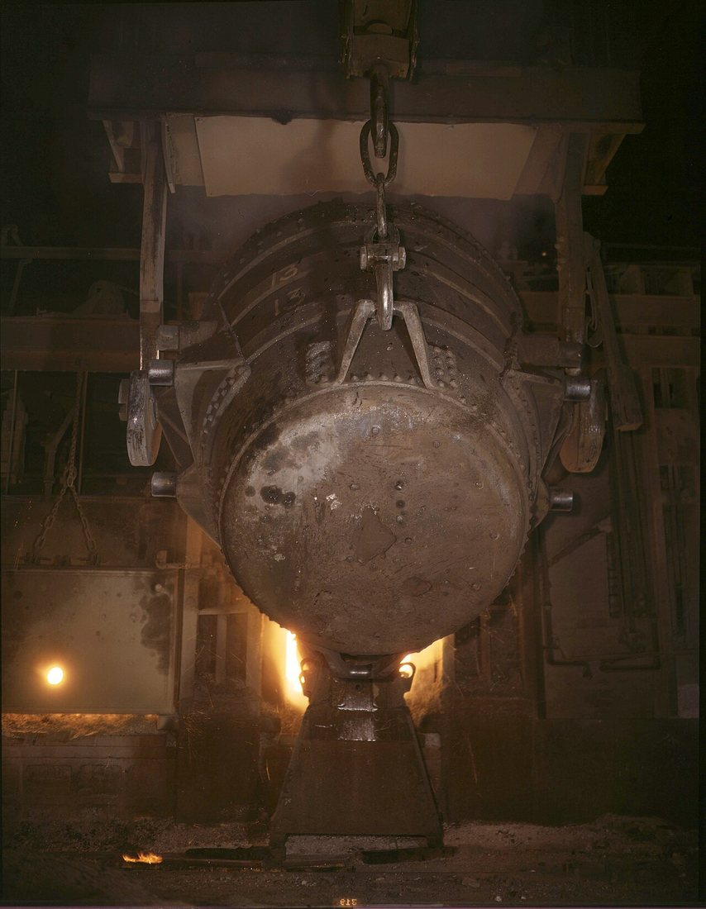

Көркем еңбек (ұлдар) · 3-бөлім · Металл өңдеу Art & Craft (Boys) · Section 3 · Metalworking Художественный труд (мальчики) · Раздел 3 · Обработка металла
Металдар мен қорытпалар: қасиеттері мен қолданысы
Metals and Alloys: Properties and Use
Металлы и сплавы: свойства и применение
Таза металдар, олардың қорытпалары және шеберхана мен техникадағы қолданысы. Pure metals, their alloys, and how their properties decide their use in the workshop and in industry. Чистые металлы, их сплавы и как свойства определяют применение в мастерской и технике.
Металл деген не? What is a metal? Что такое металл?
Металдар — жылтыр, иілгіш, жылу мен токты жақсы өткізетін заттар. Адамзат алдымен таза металдарды (мыс, темір, алтын) пайдаланды, бірақ олар көбіне жұмсақ немесе тым морт болды. Сондықтан адамдар екі немесе одан көп металды балқытып араластыра бастады — осылай қорытпалар пайда болды. Қорытпа таза металдан гөрі мықты, қатты әрі төзімді болады: қола (мыс + қалайы) мен болат (темір + көміртек) бүкіл өркениеттің атын берді — қола дәуірі, темір дәуірі. Metals are shiny, ductile materials that conduct heat and electricity well. Humanity first used pure metals (copper, iron, gold), but most were too soft or too brittle on their own. So people learned to melt and mix two or more metals — and so alloys were born. An alloy is usually stronger, harder and more durable than the pure metal: bronze (copper + tin) and steel (iron + carbon) even gave their names to whole eras — the Bronze Age and the Iron Age. Металлы — это блестящие, пластичные вещества, хорошо проводящие тепло и ток. Сначала человечество использовало чистые металлы (медь, железо, золото), но в чистом виде они часто были слишком мягкими или хрупкими. Поэтому люди научились плавить и смешивать два и более металла — так появились сплавы. Сплав обычно прочнее, твёрже и долговечнее чистого металла: бронза (медь + олово) и сталь (железо + углерод) дали названия целым эпохам — бронзовый и железный век.

Металдардың негізгі қасиеттері Key properties of metals Главные свойства металлов
Сынбай ауыр жүкке төзу қабілеті. Ability to bear heavy loads without breaking. Способность выдерживать нагрузку, не разрушаясь.
Соғу, илемдеу, сым тарту кезінде сынбай пішін өзгерту. Changing shape by forging, rolling or drawing into wire without cracking. Менять форму ковкой, прокаткой, протяжкой в проволоку без разрушения.
Жылу мен электр тогын жақсы өткізеді (мыс, алюминий). Conducts heat and electric current well (copper, aluminium). Хорошо проводит тепло и электрический ток (медь, алюминий).
Қай температурада сұйыққа айналады (құю үшін маңызды). The temperature at which it turns liquid (vital for casting). При какой температуре переходит в жидкость (важно для литья).
Тат пен тотығуға қарсы тұру (тот баспайтын болат, алюминий). Resisting rust and oxidation (stainless steel, aluminium). Сопротивление ржавчине и окислению (нержавейка, алюминий).
Жеңіл (алюминий) не ауыр (болат) — таңдау осыған байланысты. Light (aluminium) or heavy (steel) — the choice depends on this. Лёгкий (алюминий) или тяжёлый (сталь) — от этого зависит выбор.
Металдар мен қорытпаларды салыстыру Comparing metals and alloys Сравнение металлов и сплавов
| Материал | Состав | Ключевые свойства | Где применяют |
|---|---|---|---|
| Медь (Cu) | чистый металл | мягкая, отличный проводник тока и тепла | провода, трубы, чеканка |
| Сталь | железо + углерод | прочная, твёрдая, ржавеет без покрытия | балки, инструмент, машины |
| Бронза | медь + олово | твёрдая, не искрит, стойкая к коррозии | колокола, втулки, скульптура |
| Латунь | медь + цинк | красивая, легко обрабатывается | фурнитура, краны, музыка |
| Алюминий | чистый / сплавы | лёгкий, не ржавеет, мягкий | посуда, рамы, транспорт |
| Нержавейка | сталь + хром, никель | не ржавеет, гигиеничная | ножи, мойки, медицина |
| Материал | Құрамы | Негізгі қасиеттері | Қолданысы |
|---|---|---|---|
| Мыс (Cu) | таза металл | жұмсақ, ток пен жылуды тамаша өткізеді | сым, құбыр, шекіме |
| Болат | темір + көміртек | берік, қатты, жабынсыз таттанады | арқалық, аспап, машина |
| Қола | мыс + қалайы | қатты, ұшқын шықпайды, тотқа төзімді | қоңырау, төлке, мүсін |
| Жез | мыс + мырыш | әдемі, өңдеуге жеңіл | фурнитура, кран, музыка |
| Алюминий | таза / қорытпа | жеңіл, таттанбайды, жұмсақ | ыдыс, жақтау, көлік |
| Тот баспайтын болат | болат + хром, никель | таттанбайды, гигиеналы | пышақ, шұңғылша, медицина |
| Material | Composition | Key properties | Typical use |
|---|---|---|---|
| Copper (Cu) | pure metal | soft, excellent heat & current conductor | wires, pipes, chasing |
| Steel | iron + carbon | strong, hard, rusts without coating | beams, tools, machines |
| Bronze | copper + tin | hard, spark-free, corrosion-resistant | bells, bushings, sculpture |
| Brass | copper + zinc | handsome, easy to machine | fittings, taps, music |
| Aluminium | pure / alloys | light, rust-free, soft | cookware, frames, transport |
| Stainless steel | steel + chromium, nickel | rust-free, hygienic | knives, sinks, medicine |
Ереже: таза металл — жұмсақ әрі иілгіш; қорытпа — мықты әрі қатты. Шебер тапсырмаға қарай материал таңдайды. Rule of thumb: a pure metal is soft and ductile; an alloy is stronger and harder. A craftsman picks the material to fit the job. Правило: чистый металл мягкий и пластичный; сплав прочнее и твёрже. Мастер подбирает материал под задачу.
Металдар мен қорытпалар — іс жүзінде Metals and alloys in real life Металлы и сплавы — в жизни
Суретті үлкейту үшін басыңыз. Tap an image to enlarge it. Нажмите на фото, чтобы увеличить.




Қорытпа қалай жасалады How an alloy is made Как получают сплав
Балқыту. Негізгі металды (мысалы, темір не мыс) пешта оның балқу температурасынан жоғары қыздырады. Melting. The base metal (e.g. iron or copper) is heated in a furnace above its melting point. Плавление. Основной металл (например, железо или медь) нагревают в печи выше точки плавления.
Қоспалау. Сұйық металға дәл мөлшерде басқа элемент қосады: көміртек, қалайы, мырыш, хром т.б. Alloying. A precise amount of another element is added to the liquid metal: carbon, tin, zinc, chromium, etc. Легирование. В жидкий металл добавляют точную долю другого элемента: углерод, олово, цинк, хром и т.д.
Құю. Балқыманы шөмішпен қалыпқа құяды да суытады — құйма (құйылған дайындама) шығады. Casting. The melt is poured from a ladle into moulds and cooled — producing a casting (a cast blank). Литьё. Расплав разливают ковшом по формам и охлаждают — получают отливку (литую заготовку).
Өңдеу. Дайындаманы илемдейді, соғады, кеседі немесе шынықтырады — керекті пішін мен қаттылық береді. Working. The blank is rolled, forged, machined or hardened to give the needed shape and hardness. Обработка. Заготовку прокатывают, куют, режут или закаливают — придают форму и твёрдость.
Қара және түсті металдар Ferrous & non-ferrous metals Чёрные и цветные металлы
Қара металдар — темір негізіндегілер (шойын, болат). Магнитке тартылады, арзан, бірақ таттанады. Ferrous metals are iron-based (cast iron, steel). They are magnetic and cheap, but tend to rust. Чёрные металлы — на основе железа (чугун, сталь). Магнитятся, дешёвые, но ржавеют.
Түсті металдар — мыс, алюминий, мырыш, қалайы. Магнитке тартылмайды, тотқа төзімді, бірақ қымбатырақ. Non-ferrous metals are copper, aluminium, zinc, tin. Non-magnetic, corrosion-resistant, but pricier. Цветные металлы — медь, алюминий, цинк, олово. Немагнитные, стойкие к коррозии, но дороже.
Шеберханадағы қауіпсіздік Safety in the workshop Безопасность в мастерской
- Көзілдірік пен қолғап ки: металл жоңқасы өткір әрі ыстық.Wear goggles and gloves: metal chips are sharp and hot.Носи очки и перчатки: стружка металла острая и горячая.
- Балқыған металға су тигізбе — лезде шашырайды.Never let water touch molten metal — it splatters instantly.Не допускай воды к расплаву — мгновенно разбрызгивается.
- Үшкір жиектерді егеу, дайындаманы тискіде бекіт.File sharp edges; clamp the workpiece in a vice.Опиливай острые кромки; зажимай заготовку в тисках.
- Металл шаңы мен буын жұтпа — желдетуді қос.Don't breathe metal dust or fumes — use ventilation.Не вдыхай металлическую пыль и пары — включай вентиляцию.